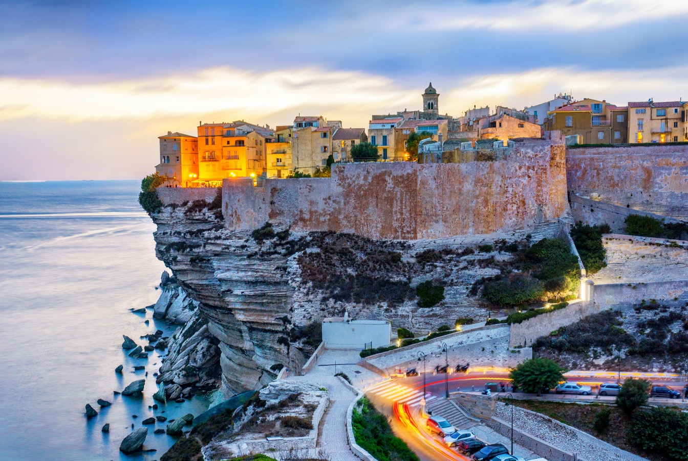

Yvoire
Bonifacio est une ville côtière pittoresque située sur l'extrémité sud de l'île de Corse, en France. Nichée au sommet de falaises calcaires abruptes et surplombant la mer Méditerranée d'un bleu profond, Bonifacio offre un paysage à couper le souffle et une atmosphère unique.
Le joyau de Bonifacio est sa vieille ville, perchée au sommet des falaises. Avec ses ruelles étroites, ses maisons en pierre et ses escaliers escarpés, cette cité médiévale dégage une atmosphère d'histoire et de charme. Promenez-vous dans les rues pavées et découvrez des boutiques d'artisanat, des restaurants animés et des cafés en plein air offrant une vue imprenable sur la mer.
En somme, Bonifacio est une destination exceptionnelle qui allie l'histoire, la beauté naturelle et la gastronomie. Que vous souhaitiez vous perdre dans les ruelles médiévales, explorer les grottes marines, vous détendre sur les plages de rêve ou déguster des mets délicieux, Bonifacio saura vous séduire et vous offrir une expérience inoubliable sur l'île de Corse.